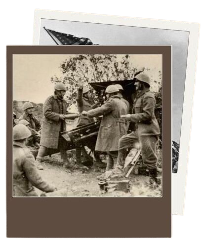

1ª fase (1939-1941): ficou marcada pela supremacia das forças alemãs e japonesas no conflito. Os alemães, por meio da blitzkrieg, conseguiram conquistar uma série de nações europeias. Os japoneses, por sua vez, iniciaram sua expansão pelo sudeste asiático, conquistando as colônias de britânicos, franceses e holandeses. Além disso, os japoneses realizaram um ataque que causou grande prejuízo aos norte-americanos, em Pearl Harbor.
2ª fase (1942-1943):é o momento em que o quadro da Segunda Guerra começou a inverter-se. Os alemães foram barrados pelos soviéticos na famosa Batalha de Stalingrado, e o poder de guerra dos alemães iniciou seu declínio. O mesmo aconteceu com os japoneses, que, após a derrota na Batalha de Midway, perderam parte considerável do seu poder de guerra e foram sendo derrotados lentamente pelos norte-americanos.
3ª fase (1944-1945):momento em que os membros do Eixo são derrotados. As forças dos Aliados na Europa cercaram os alemães e conduziram a invasão do território germânico na virada de 1944 para 1945. Os japoneses passaram a sofrer cada vez mais com os bombardeios dos EUA. Internamente o país estava em colapso, mas a recusa dos japoneses em renderem-se levou os americanos a atingirem o Japão com duas bombas atômicas. A derrota do Eixo trouxe o fim à guerra
